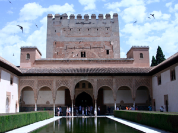
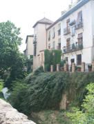
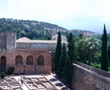
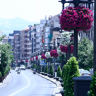
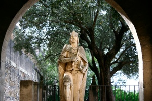

GRANADA
Monday, June 28
We were up early to catch plane to Granada – about 11 hours away by car, less than 90 minutes by air!
Our hotel was so very cool (Hotel Migueletes) – from the main street we had to walk up 2 alleys to get there, but once there we found that it had an open-air courtyard and large rooms (we had a king bed with pull out sofa) with interesting bathrooms (pink with a circular ceiling).
It was mid morning so we decided to venture up the hill to the Albaicin area, the old Moorish quarter of the city. It’s a very steep climb, but has great views of the Alhambra with a Sierra Nevada backdrop. We ended up missing a turn, and kept going UP and UP and UP until decided we could do it no longer and then eased on DOWN the road, starving and weary travelers.
Thankfully, there was a large patio area not too far down that included nice views of the River Darro and several restaurants were set up there. The downside was that they all had “picture menus” (so dubbed by Claire because they had just a few items, clearly photographed and listed in English) and their bathroom lights were set on a timer, which Karen didn’t figure out until she was stuck in the pitch black and couldn’t find the latch on the door to exit! (After her panic subsided, she eventually found her way out.)
In the evening we met our guide Jim at our hotel, who took us to rent bikes and led us for a ride along the river. It was nice to be out doing something besides walking, although Claire was upset that her (nearly 50 year old) mom couldn’t go as far as she would have liked!
After freshening up at the hotel, we headed downtown for dinner at Bodegas Castaneda outside in small alley. Interesting food (flat bean casserole) and good red wine!
So after walking back to our hotel, we realized that our key card for the exterior door didn’t work and the office was not staffed after 11:00 p.m. There were phone numbers listed to call, but Karen couldn’t figure out how to make her iPhone handle the local call. We were trying to figure out what to do (it was after midnight) when a woman exited her apartment across the alley to walk her dog (who does that so late at night???). She didn’t speak English but Claire (and our sign language) managed to communicate our dilemma. She pulled out her cell phone, told of our plight, and said that someone would be there in a few minutes. Karen calls this a “God moment”; George and Claire aren’t sure, but are thankful when a security guard showed up to let us in and properly activated our key card!
Tuesday, June 29
Today our guide was Israel; Claire could actually read the fine print on his badge and reported to us that his full name was Felix Israel Rodriguez Alonso. In any case, he got us all a taxi to take us to the Alhambra. We got a pretty extensive introduction to the area, and to what we’re going to see, as well as an insider’s view of the city of Granada (whose main industry, as it turns out, is tourism). The Alhambra was first constructed as a fortress high on a hill, but was later turned into a Moorish palace. Its gardens are stunning, and the architecture is interesting because we learned what makes it distinctively Moorish (lacelike walls, courtyards with fountains, Arabic inscriptions, arches, tile work, honeycomb vaulted ceilings, the use of symmetry in design, with only the depiction of plants and animals, not humans). This became useful later in our trip, as we began to recognize these elements in other places.
Israel recommended that we have lunch on site at the Hotel America, where we dined in an outdoor courtyard filled with lots of birds!
Later in the afternoon we visited Granada’s Catedral. This “richly ornate Renaissance cathedral with its spectacular altar is one of the country's architectural highlights, acclaimed for its beautiful facade and gold-and-white interior.” It was so ornate that Karen commented that it felt “of man”, not “of God”. Well, that all changed when we realized that a choir was starting to rehearse, with accompaniment by the very large (and loud!) organ. It was a real treat to stay and feel the music fill the space.
Again we were able to find an Irish pub to watch a World Cup game – this time it was Spain vs. Portugal (Spain won, 1-0!). Afterwards we enjoyed dinner at Cunnini, a restaurant that served amazing seafood, and where we met two couples from Oregon who enjoyed our gift of truffles to end their meal!

An Old World City


“One of Europe’s greatest attractions, the stunningly beautiful and celebrated Calat Alahambra (Red Castle) is perhaps the most remarkable fortress ever constructed.”
Frommer’s Guide to Spain




